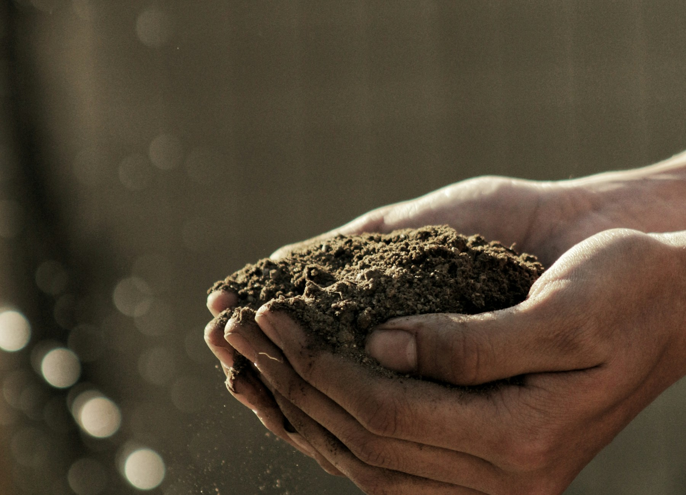

Edafológicos
Propiedades físico‑químicas del sueloQué contiene
- Textura: arena, limo y arcilla (0–30 cm)
- Carbono orgánico y materia orgánica (%)
- pH, salinidad y CIC (cmol/kg)
- Densidad aparente (g/cm³)
- Fósforo (Olsen) y potasio (mg/kg)
- Capacidad de campo y conductividad hidráulica
- Mapas de suelo (SoilGrids ~250 m)
Aplicaciones
- Ajustar la fertilización
- Conservar la fertilidad
- Reducir la erosión